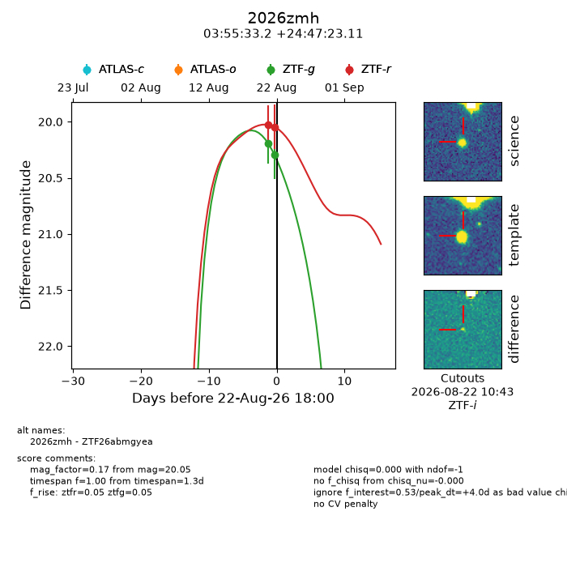
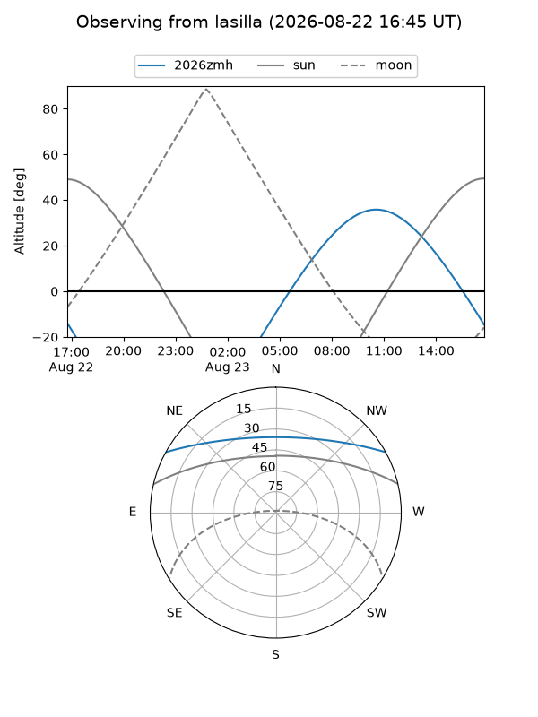
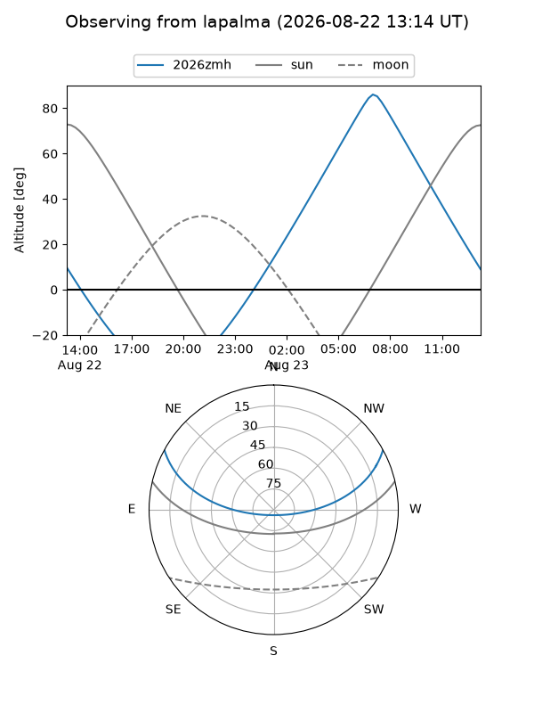
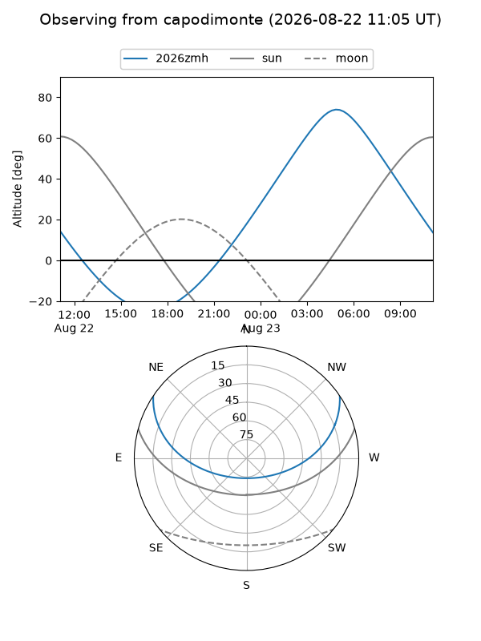
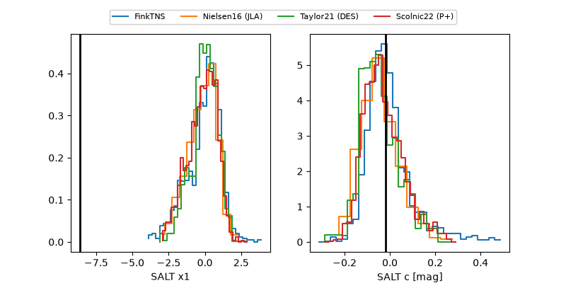

2026zmh
Target 2026zmh at 2026-08-22 18:03
Aliases and brokers:
FINK-ZTF: ztf.fink-portal.org/ZTF26abmgyea
Lasair-ZTF: lasair-ztf.lsst.ac.uk/objects/ZTF26abmgyea
ALeRCE-ZTF: alerce.online/object/ZTF26abmgyea
YSE-PZ: ziggy.ucolick.org/yse/transient_detail/2026zmh
TNS name: wis-tns.org/object/2026zmh
Direct TNS query: direct search
alt names
ZTF26abmgyea (ztf,fink_ztf)
2026zmh (tns,yse)
Coordinates:
equatorial (ra, dec) = 58.8881,+24.78975
equatorial (HMS+DMS) = 03:55:33.16,+24:47:23.11
galactic (l, b) = (167.6176,-21.70257)
Flags:
TNS type: nan
peak dt: +4.0
Photometry:
last ztfg=20.29, ztfr=20.05
2 ztfg, 2 ztfr detections
Lightcurve

Visibility



Additional plots
